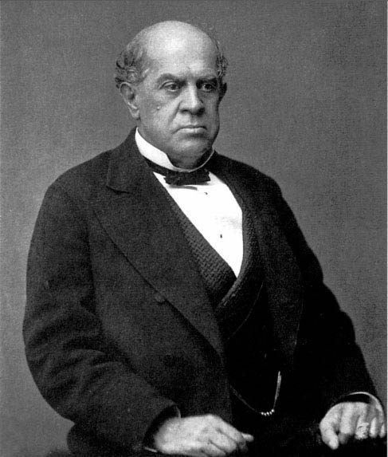

Niñez
Nació en Buenos Aires el 26 de junio de 1819 en el barrio de Monserrat.

Fue a la escuela Monserrat, aunque no se destacaba como buena alumna y acompañaba a su padre al café porteño La Victoria, donde recitaba odas patrióticas.
Familia y exilio
Su padre fue un andaluz llamado José María Manso y su madre una porteña, Teodora Cuenca.
En 1836 la familia Manso tuvo que exiliarse en Montevideo por la persecución a los unitarios durante el gobierno de Juan Manuel de Rosas.
Luego, se exiliarían también en Río de Janeiro, donde conoció a su marido con quien tuvo a sus dos hijas, Eulalia y Herminia. Durante su matrimonio vivieron también en Estados Unidos y Cuba.


Juana Manso regresó a Buenos Aires con sus dos hijas en julio de 1853, ya sin Rosas en el poder.
Aquí escribió y dio clases particulares de inglés, francés e italiano, pero, al no poder sostener económicamente a su familia, se vio obligada a regresar a Brasil.
Su regreso a Buenos Aires
Finalmente, a mediados de 1859, regresó definitivamente a Buenos Aires, donde conoció a Domingo Faustino Sarmiento, tuvo una gran trayectoria como educadora y se convirtió en la primera mujer en ser funcionaria pública.
Juana Manso falleció en Buenos Aires el 24 de abril de 1875, fue sepultada en el Cementerio Británico y, en 1915, sus restos fueron trasladados al panteón de Maestros del cementerio de la Chacarita.